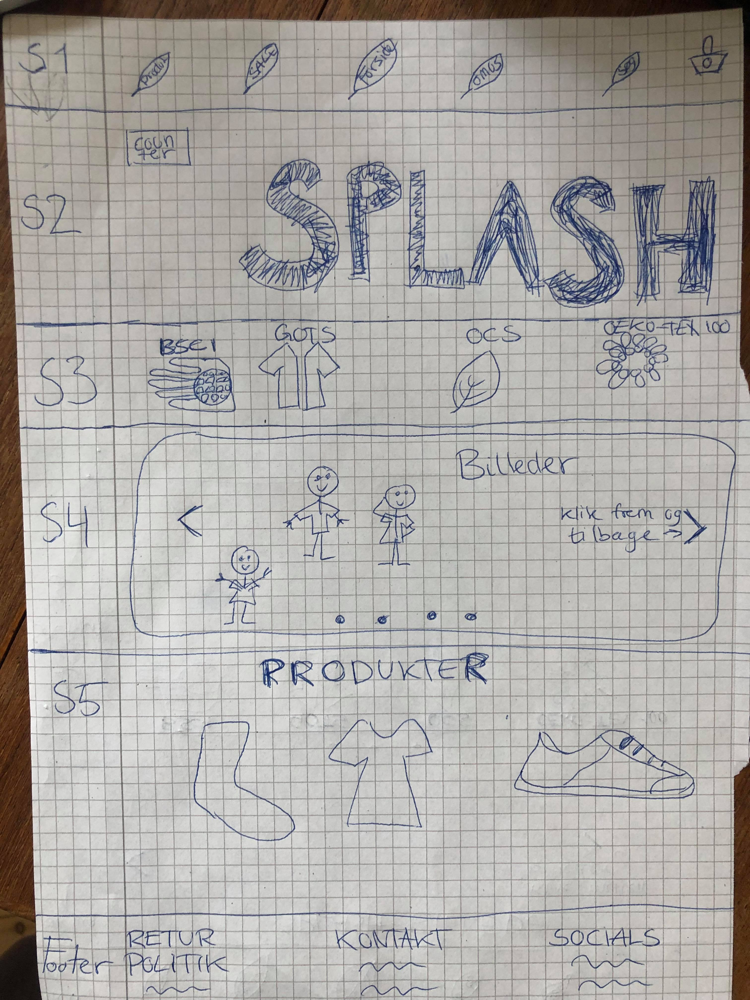

I dette tema stiftede jeg bekendtskab med et dengang hidtil for mig
ukendt program, Adobe XD.
Via grundig gennemgang i undervisningen og youtube-tutorials lærte jeg
programmet godt at kende, og stod i slutningen af temaet med en færdig
XD-prototype, hvor jeg selv havde stået for alt fra visuelt design og
indholdsproduktion. I tema 3 gennemgik jeg desuden processen om at
skabe et brand - fra idégenerering til færdigt produkt. Gennem øvelser
såsom analyse af markedet, brainstorm af brand, interviews, og senere
hen desk research, tænke-højt-tests blev jeg klædt godt og grundigt på
til at skulle skabe eget brand.
Min løsning på denne opgave var et bæredygtigt brand, "Roots", ejet af
en søskendetrio.
Produktudvalget bestod af et net, plakater og t-shirts, hvoraf salget
af sidstnævnte bidragede til et plantet træ pr solgt t-shirt.
Projektet talte godt ind i tidens store samtaleemne: bæredygtighed
og at passe på miljøet og vores klode samtidigt.
Brandet skulle skabe tryghed for brugeren ved at være ejet af
førnævnte søskendetrio.
Dernæst ved brug af pathos appellerer det til forbrugerens følelser
ved at gøre en god gerning mens man onlineshopper.

